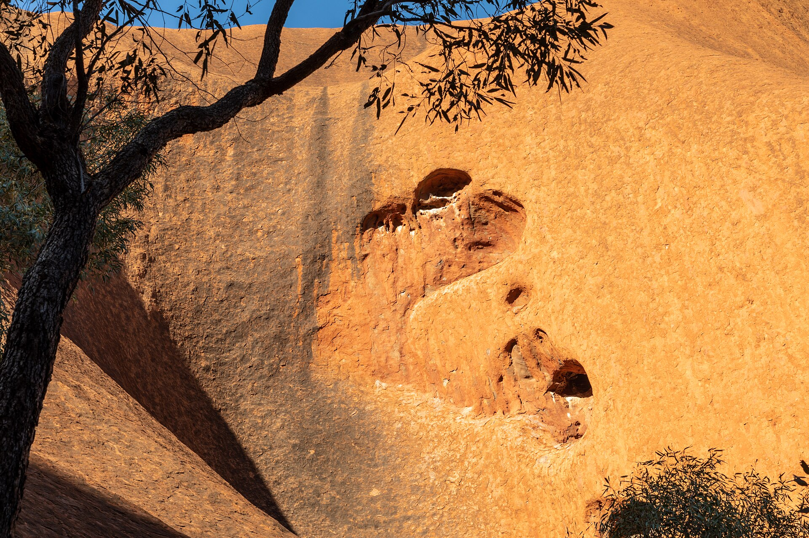

Arrival gateway
Start with Canberra Airport and confirm the current transfer, luggage and check-in plan.
One central base, a lake-and-museum cluster, one protected nature day and a practical departure buffer.
Transport Canberra journey planning is the transport reference for this draft. It is not live booking confirmation: recheck services, weather, accessibility, attraction calendars and provider terms.
Traveller control: Alfred turns PAX and constraints into an editable route; providers confirm live availability and terms.
A condensed route showing Canberra’s central clusters, nature alternative and pacing boundaries.

Arrive in Canberra, transfer to a central or Kingston base, and keep the first evening local around Lake Burley Griffin. Confirm airport transfer, check-in and dinner timing.
Cluster Parliament House, the National Museum of Australia and the National Gallery of Australia rather than crossing the city repeatedly. Choose one timed indoor anchor and keep the second museum as a weather alternative.
Use Tidbinbilla Nature Reserve as the single outdoor anchor. Check road conditions, opening information, walks, wildlife guidance and the family’s heat tolerance; keep the afternoon light.
Make Questacon the flexible morning anchor, then use the lake foreshore or a nearby park for a low-pressure afternoon. Confirm session times, accessibility and current ticket terms before booking.
Keep the final morning close to the base, recheck airport transfer, luggage and flight timing, and retain a nearby café or museum option only if the transport buffer remains protected.
Planning notes
Start with Canberra Airport and confirm the current transfer, luggage and check-in plan.
A central or Kingston base keeps the lake, parliamentary and cultural clusters manageable.
Tidbinbilla is a deliberate outdoor day; check conditions, access and family suitability before committing.
Generate, validate and edit the complete Canberra itinerary in the Alfred app.
Plan a trip in Alfred